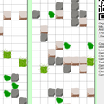
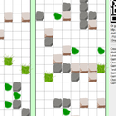

Snowman Race is an Next Generation Snowman Racing Simulator. Players use their smartphones as controllers to race to the end of a simple maze, gathering items to slow their enemies along the way.
Snowman Race was created for the Ludum Dare Competition. As such, it was developed from scratch in 48 hours as a solo project. The theme of the competition was "entire game on one screen", which I took to mean a multiplayer game where everyone looked at the same screen. The winter asthetic came from a potential theme, which was simply "☃" (the unicode snowman character).
For reasons unknown, the game does not work on iPhones, nor on OSX. I was unable to research this during the duration of the jam, and indeed came to learn this afterwards when there were many confused commenters. If you want to give it a try, you'll be best off using Android phones, and Chrome or Firefox on Linux or Windows.
Images
 
